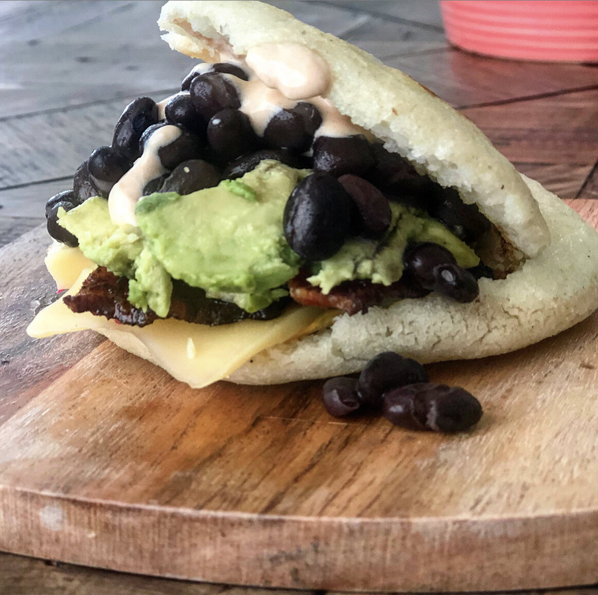

Arepas

Arepas are a type of corn cake popular in Venezuela and Columbia,
though iterations exist in other Latin countries. The Venezuelan
variety is served as sandwiches that are split open and stuffed
with anything from meat and cheese to corn, beans, or even fish.
The arepa itself is made using masarepa (naturally
gluten-free corn flour) along with water ad salt.
Ingredients
- 10 ounces (2 cups) masarepa blanca
- 1 teaspoon salt
- 2 1/2 cups warm water
- 1/4 cup vegetable oil
- 1 recipe filling (not included)
Steps
-
Adjust oven rack to middle position
and heat oven to 400 degrees. Whisk
masarepa, salt, and bakig powder
together in bowl. Gradually add water
and stir until combined. Using generous
1/3 cup dough, form eight 3-inch rounds,
each about 1/3 inch thick.
-
Heat 2 tablespoons oil in 12-inch non-
stick skillet over medium-high heat until
shimmering. Add 4 arepas and cook until
golden on both sides, about 4 minutes per
side. Transfer to wire rack set in rimmed
baking sheet and repeat with remaining 2
tablespoons oil and remaining 4 arepas.
(Fried arepas can be refrigerated for up
to 3 days, or frozen for up to 1 month.)
-
Bake util arepas sound hollow when tapped
on bottom, about 10 minutes. (If frozen,
do not thaw before bakig; increase baking
time by 20 minutes.) Split hot arepas open
using paring knife or two forks, and stuff
each with geerous 3 tablespoons of filling.
Serve immediately.